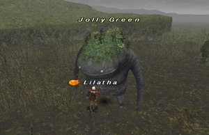
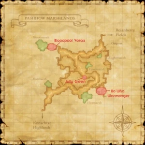
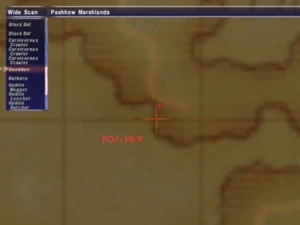
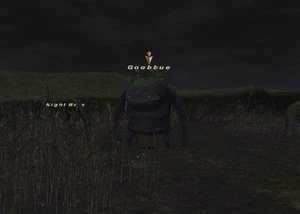

Level 75 reference · Zenith rules
|
Job: Notorious Monster |
 |

|
Zone |
Level |
Drops |
Steal |
Spawns |
Notes | ||||||
|
27-28 |
1 |
| |||||||||
|
HP = Detects Low HP; M = Detects Magic; Sc = Follows by Scent; T(S) = True-sight; T(H) = True-hearing JA = Detects job abilities; WS = Detects weaponskills; Z(D) = Asleep in Daytime; Z(N) = Asleep at Nighttime | |||||||||||






Notes:
- Located around I-7/8
- Lottery pop of Goobbues, possibly 1-2 hour wait between spawns
- Killable solo by a level 36
- Duoable by 2 bsts, level 20-22. Just keep throwing pets at it till it doesn't get up anymore.
- Killable solo by a level 30 BLU/NIN.
Adapted from Eden Wiki: Jolly Green · Contributors and history · CC BY-SA 4.0. Revision 44032. Layout, links and optional background text adapted for Zenith.